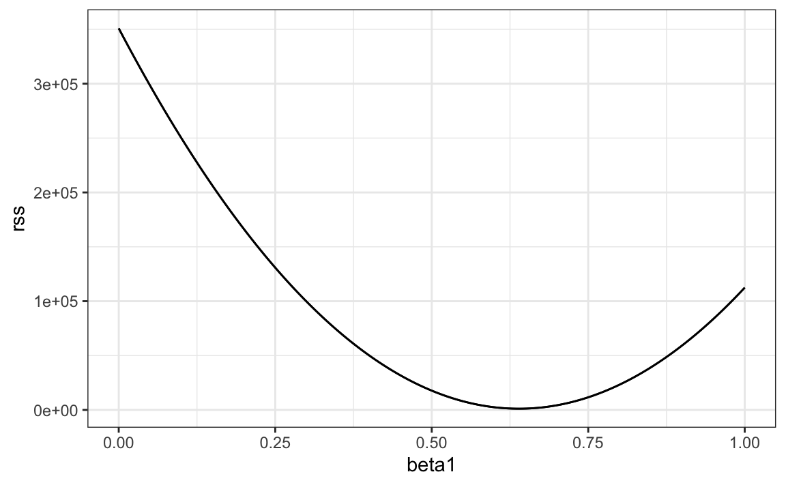
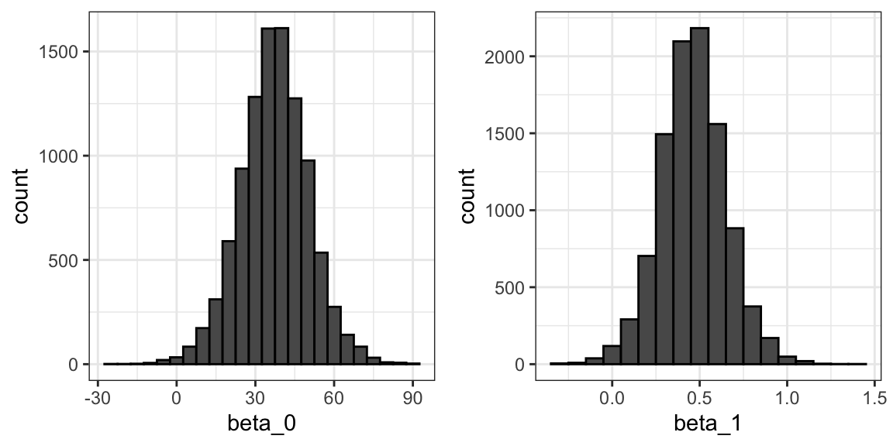
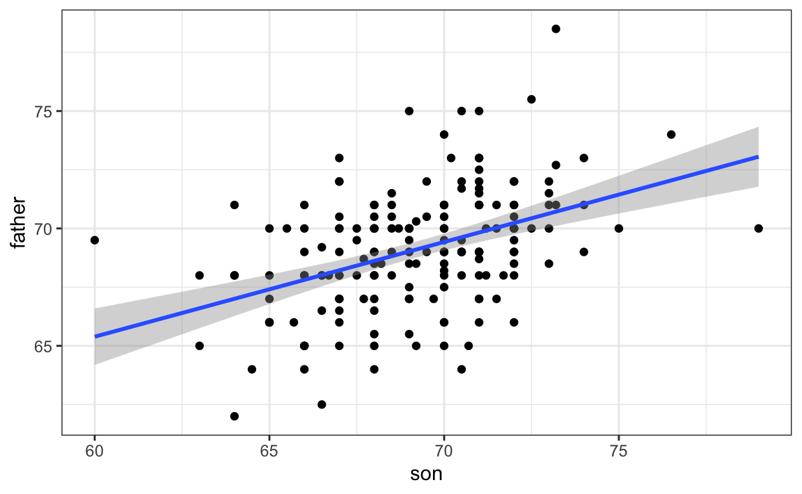
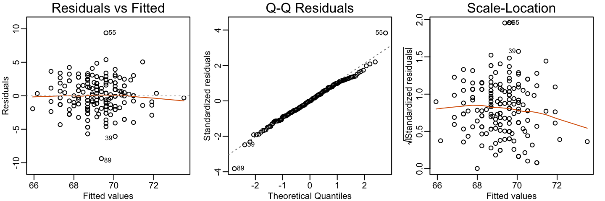
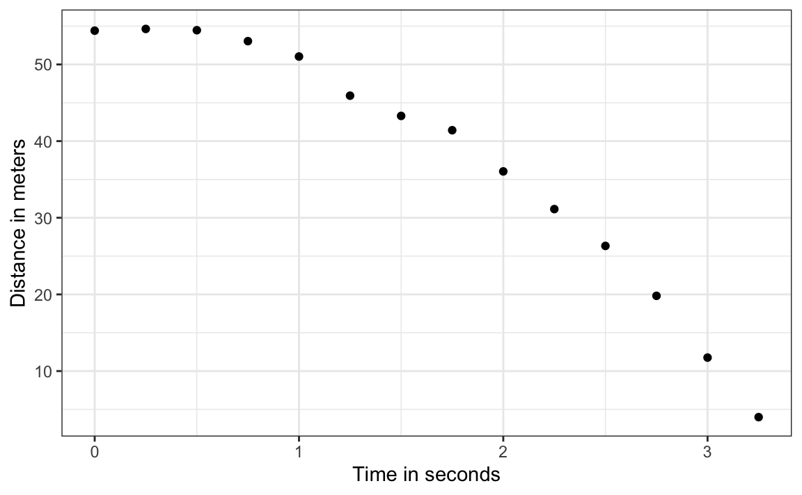
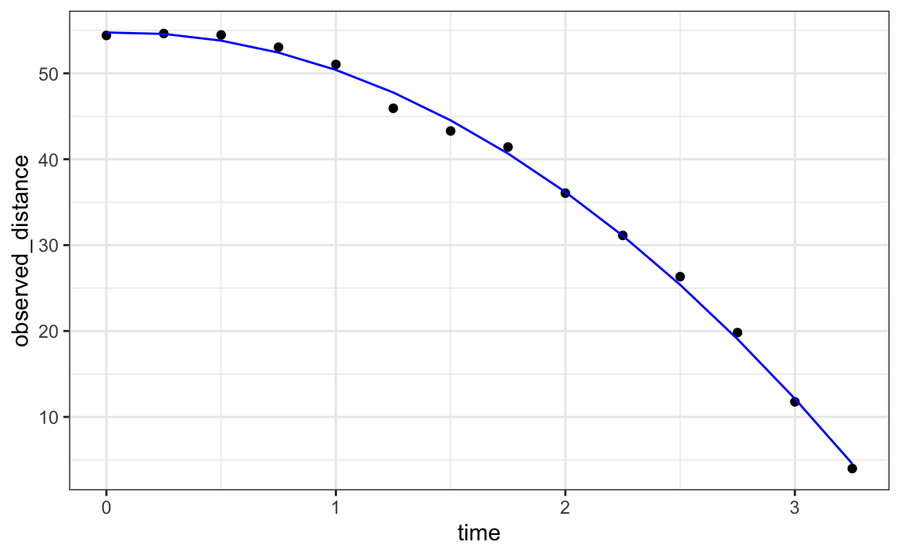
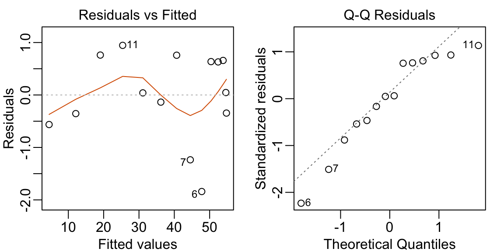

library(data.table)
library(HistData)
set.seed(1983)
galton <- as.data.table(GaltonFamilies)[gender == "male", .SD[sample(.N, 1)], by = family]
galton <- galton[, .(father, son = childHeight)]16 The Linear Model Framework
We are now ready to understand the title of this part of the book, and specifically the connection between regression and linear models. In the previous chapter, we showed that if two variables follow a bivariate normal distribution, then the conditional expectation of one given the other lies on a straight line, the regression line. In that setting, the linear relationship was not an assumption, but a mathematical consequence of the probability model.
In practice, however, we often adopt the linear relationship as a modeling strategy, even when the underlying distributions are not exactly bivariate normal. To work with such models, we need a general mathematical approach for estimating the unknown coefficients. In this chapter, we introduce the least squares estimator (LSE), the standard method used to estimate these parameters. The LSE provides a unified way to fit linear models across a wide range of applications.
We end the chapter presenting one example in which the linear model was historically motivated: measurement error models. This example is different from the height data we studied earlier, but the same linear model framework, the same least squares mathematics, and even the same R functions can be used to fit it. Later chapters will introduce additional examples in which linear models play a central role.
16.1 The linear model representation
We note that linear here does not refer to lines exclusively, but rather to the fact that the conditional expectation is a linear combination of variables. In mathematics, when we multiply each variable by a constant and then add them together, we say we formed a linear combination of the variables. For example, \(3x - 4y + 5z\) is a linear combination of \(x\), \(y\), and \(z\). We can also add a constant so \(2 + 3x - 4y + 5z\) is also a linear combination of \(x\), \(y\), and \(z\).
We previously described how if \(X\) and \(Y\) are bivariate normal, then if we look at only the pairs with \(X=x\), then \(Y \mid X=x\) follows a normal distribution with expected value \(\mu_Y + \rho \frac{x-\mu_X}{\sigma_X}\sigma_Y\), which is a linear function of \(x\). Note also that the standard deviation \(\sigma_Y \sqrt{1-\rho^2}\) does not depend on \(x\). This implies that we can write:
\[ Y = \beta_0 + \beta_1 x + \varepsilon \]
and assume \(\varepsilon\) follows a normal distribution with expected value 0 and fixed standard deviation, then \(Y\) has the same properties as the regression setup gave us: \(Y\) follows a normal distribution, the expected value is a linear function of \(x\), and the standard deviation does not depend on \(x\).
In statistical textbooks, the \(\varepsilon\) terms are referred to as errors. Historically, this reflected the idea that deviations from the model were due to measurement inaccuracies. Today, the term is used more broadly: the \(\varepsilon\)s represent all variation in the outcome that is not explained by the predictors in the model. This variation may have nothing to do with mistakes. For example, if someone is two inches taller than what we would predict based on their parents’ heights, those two inches are not an error; they are simply natural variation. Although the term error is not ideal in this sense, it remains standard terminology, and we will use it to denote the unexplained variability in the model.
If we were to specify a linear model for Galton’s data, we would denote the \(N\) observed father heights with \(x_1, \dots, x_n\), then we model the \(N\) son heights we are trying to predict with:
\[ Y_i = \beta_0 + \beta_1 x_i + \varepsilon_i, \, i=1,\dots,N. \]
Here \(x_i\) is the father’s height, which is fixed (not random) due to the conditioning, and \(Y_i\) is the random son’s height that we want to predict. We can further assume that the \(\varepsilon_i\) are independent from each other and all have the same standard deviation.
In the linear model framework the \(x_i\) are refereed to as the explanatory variables, covariates, or predictors.
In the above model we know the \(x_i\), but to have a useful model for prediction, we need \(\beta_0\) and \(\beta_1\). We estimate these from the data. Once we do this, we can predict son’s heights for any father’s height \(x\). We show how to do this in the next section.
Although this model is exactly the same one we derived earlier by assuming bivariate normal data, a somewhat nuanced difference is that, in the first approach, we assumed the data was bivariate normal and the linear model was derived, not assumed. In practice, linear models are just assumed without necessarily assuming normality: the distribution of the \(\varepsilon\)s is not necessarily specified. Nevertheless, if your data is bivariate normal, the above linear model holds. If your data is not bivariate normal, then you will need to have other ways of justifying the model.
One reason linear models are popular is that they are easily interpretable. In the case of Galton’s data, we can interpret the data like this: due to inherited genes, the son’s height prediction grows by \(\beta_1\) for each inch we increase the father’s height \(x\). Because not all sons with fathers of height \(x\) are of equal height, we need the term \(\varepsilon\), which explains the remaining variability. This remaining variability includes the mother’s genetic effect, environmental factors, and other biological randomness.
Given how we wrote the model above, the intercept \(\beta_0\) is not very interpretable, as it is the predicted height of a son of a father with no height. To make the slope parameter more interpretable, we can rewrite the model slightly as:
\[ Y_i = \beta_0 + \beta_1 (x_i - \bar{x}) + \varepsilon_i, \, i=1,\dots,N \]
with \(\bar{x} = 1/N \sum_{i=1}^N x_i\) the average of the \(x\). In this case, \(\beta_0\) represents the height when \(x_i = \bar{x}\), which is the height of the son of an average father.
Later, specifically in Chapters 17 and 20, we will see how the linear model representation permits us to use the same mathematical frameworks in other contexts and to achieve more complicated goals than predicting one variable from another.
16.2 Least Squares Estimates
For linear models to be useful, we have to estimate the unknown \(\beta\)s. The standard approach is to find the values that minimize the distance of the fitted model to the data. Specifically, we find the \(\beta\)s that minimize the least squares (LS) equation shown below. For Galton’s data, the LS equation looks like this:
\[ RSS = \sum_{i=1}^n \left\{ y_i - \left(\beta_0 + \beta_1 x_i \right)\right\}^2 \]
The quantity we try to minimize is called the residual sum of squares (RSS).
Once we find the values that minimize the RSS, we will call the values the least squares estimates (LSE) and denote them by placing a hat over the parameters. In our example we use \(\hat{\beta}_0\) and \(\hat{\beta}_1\).
We will demonstrate how we find these values using the previously defined galton dataset:
Let’s start by writing a function that computes the RSS for any pair of values \(\beta_0\) and \(\beta_1\).
So for any pair of values, we get an RSS. Here is a plot of the RSS as a function of \(\beta_1\), when we keep the \(\beta_0\) fixed at 25.
beta1 <- seq(0, 1, length = nrow(galton))
results <- data.frame(beta1 = beta1, rss = sapply(beta1, rss, beta0 = 25))
results |> ggplot(aes(beta1, rss)) + geom_line() +
geom_line(aes(beta1, rss))
We can see a clear minimum for \(\beta_1\) at around 0.65. However, this minimum for \(\beta_1\) is for when \(\beta_0 = 25\), a value we arbitrarily picked. We don’t know if (25, 0.65) is the pair that minimizes the equation across all possible pairs.
Trial and error is not going to work in this case. We could search for a minimum within a fine grid of \(\beta_0\) and \(\beta_1\) values, but this is unnecessarily time-consuming since we can use calculus. Specifically, we take the partial derivatives, set them to 0, and solve for \(\beta_0\) and \(\beta_1\). Of course, if we have many parameters, these equations can get rather complex. But there are functions in R that do these calculations for us. We will study these next. To learn the mathematics behind this, you can consult one of the books on linear models in the Recommended Reading section.
16.3 The lm function
In R, we can obtain the least squares estimates for a linear model using the lm function. To fit the model:
\[ Y_i = \beta_0 + \beta_1 x_i + \varepsilon_i \]
with \(Y_i\) being the son’s height and \(x_i\) being the father’s height, we can use this code:
fit <- lm(son ~ father, data = galton)The most common way we use lm is by using the character ~ to let lm know which is the variable we are predicting (left of ~) and which we are using to predict (right of ~). The intercept is added automatically to the model that will be fit.
The object fit includes information about the fit. We can use the function summary to extract a summary of this information:
summary(fit)
#>
#> Call:
#> lm(formula = son ~ father, data = galton)
#>
#> Residuals:
#> Min 1Q Median 3Q Max
#> -9.38 -1.59 0.00 1.83 9.39
#>
#> Coefficients:
#> Estimate Std. Error t value Pr(>|t|)
#> (Intercept) 37.4658 5.0052 7.49 3.2e-12 ***
#> father 0.4592 0.0724 6.34 1.8e-09 ***
#> ---
#> Signif. codes: 0 '***' 0.001 '**' 0.01 '*' 0.05 '.' 0.1 ' ' 1
#>
#> Residual standard error: 2.46 on 177 degrees of freedom
#> Multiple R-squared: 0.185, Adjusted R-squared: 0.181
#> F-statistic: 40.2 on 1 and 177 DF, p-value: 1.82e-09To understand some of the terms included in this summary, we need to remember that the LSE are random variables. Mathematical statistics gives us some ideas of the distribution of these random variables.
In Chapter 20, after describing a more complex case study, we gain further insights into the application of regression in R.
LSE are random variables
The LSE is derived from the data \(y_1,\dots,y_N\), which are a realization of random variables \(Y_1, \dots, Y_N\). This implies that our estimates are random variables. To see this, we can run a Monte Carlo simulation in which we assume the son and father height data defines a population, take a random sample of size \(N=50\), and compute the regression slope coefficient for each one:
We can see the variability of the estimates by plotting their distributions:

The reason these look normal is because the central limit theorem applies here as well: for large enough \(N\), the least squares estimates will be approximately normal with expected value \(\beta_0\) and \(\beta_1\), respectively.
The standard errors are a bit complicated to compute, but mathematical theory does allow us to compute them and they are included in the summary provided by the lm function. The function summary shows us the standard error estimates:
You can see that the standard errors estimates reported above are close to the standard errors from the simulation:
The summary function also reports t-statistics (t value) and p-values (Pr(>|t|)). The t-statistic is not actually based on the central limit theorem, but rather on the assumption that the \(\varepsilon\)s follow a normal distribution. Under this assumption, mathematical theory tells us that the LSE divided by their standard error, \(\hat{\beta}_0 / \widehat{\mathrm{SE}}[\hat{\beta}_0]\) and \(\hat{\beta}_1 / \widehat{\mathrm{SE}}[\hat{\beta}_1]\), follow a t-distribution with \(N-p\) degrees of freedom, with \(p\) the number of parameters in our model. In our example \(p=2\), and the two p-values are obtained from testing the null hypothesis that \(\beta_0 = 0\) and \(\beta_1=0\), respectively.
Remember that, as we described in Section 10.2.3, for large enough \(N\), the CLT works and the t-distribution becomes almost the same as the normal distribution. Also, notice that we can construct confidence intervals using the confint function:
confint(fit, "father", level = 0.95)
#> 2.5 % 97.5 %
#> father 0.112 1.14Although we do not show examples in this book, hypothesis testing with regression models is commonly used in epidemiology and economics to make statements such as “the effect of A on B was statistically significant after adjusting for X, Y, and Z”. However, several assumptions have to hold for these statements to be true.
Predicted values are random variables
Once we fit our model, we can obtain a prediction of \(Y\) by plugging the estimates into the regression model. For example, if the father’s height is \(x\), then our prediction \(\hat{y}\) for the son’s height will be:
\[\hat{y} = \hat{\beta}_0 + \hat{\beta}_1 x\]
When we plot \(\hat{y}\) versus \(x\), we see the regression line.
Keep in mind that the prediction \(\hat{y}\) is also a random variable and mathematical theory tells us what the standard errors are. If we assume the errors are normal, or have a large enough sample size, we can use theory to construct confidence intervals as well. In fact, the ggplot2 layer geom_smooth(method = "lm") surrounds the regession line using these confidence intervals:
galton |> ggplot(aes(son, father)) + geom_point() + geom_smooth(method = "lm")
The R function predict takes an lm object as input and returns the prediction. If requested, the standard errors and other information from which we can construct confidence intervals is provided:
16.4 Model diagnostics
When we assume a linear model, rather than derive it from theory, all interpretations depend on how well the model represents the data. The lm function will fit the model and produce coefficient estimates, standard errors, and p-values even if the model is misspecified. Interpreting such results without verifying assumptions can lead to misleading conclusions.
For this reason, checking model assumptions is a critical requirement in statistical modeling. Diagnostic plots provide visual tools to assess whether the model captures the main structure in the data, whether residuals behave as expected, and whether potential outliers or influential points are distorting the fit. These checks are especially important when there is no strong theoretical justification for the assumed model—such as when the data-generating process is unknown or complex. In these cases, diagnostics are our main defense against drawing incorrect or overconfident conclusions.
Visually inspecting residuals, defined as the difference between observed values and predicted values:
\[ r = y - \hat{y} = y- \left(\hat{\beta}_0 - \hat{\beta}_1 x_i\right), \] and summaries of the residuals, is a powerful way to diagnose if the model is useful. Note that the residuals can be thought of estimates of the errors since:
\[ \varepsilon = Y - \left(\beta_0 + \beta_1 x_i \right). \] In fact residuals are often denoted as \(\hat{\varepsilon}\). This motivates several diagnostic plots. Because we observe \(r\), but don’t observe \(\varepsilon\), we based the plots on the residuals.
Because the errors are assumed not to depend on the expected value of \(Y\), a plot of \(r\) versus the fitted values \(\hat{y}\) should show no relationship.
In cases in which we assume the errors follow a normal distribution, a qqplot of standardized \(r\) should fall on a line when plotted against theoretical quantiles.
Because we assume the standard deviation of the errors is constant, if we plot the absolute value of the residuals, it should appear constant.
We prefer plots rather than summaries based on, for example, correlation because, as noted in Section 15.2.2, correlation is not always the best summary of association. The function plot applied to an lm object automatically plots these.
plot(fit, which = 1:3)
This function can produce six different plots, and the argument which let’s you specify which you want to see. You can learn more by reading the plot.lm help file. However, some of the plots are based on more advanced concepts beyond the scope of this book. To learn more, we recommend an advanced book on regression analysis included in the Recommended Reading section.
In Chapters 17 and 20, we introduce data analysis challenges in which we may decide to not include certain variables in the model. In these cases, an important diagnostic test is to checks if the residuals are related to variables not included in the model.
16.5 Measurement error models
Historically, writing linear models in the form \(Y = \beta_0 + \beta_1 x + \varepsilon\) originated in contexts where the \(\varepsilon\) term represented measurement error. Early scientists used least squares to estimate physical constants from repeated measurements affected by instrument noise. Later, Galton and Pearson extended this framework to study relationships between variables, such as the height example we examined earlier.
In this section, we briefly present a setting where the measurement-error interpretation is appropriate and show that we can fit the corresponding model using the same mathematics and the same R function. This illustrates one of the key advantages of the linear model framework: a single set of tools applies across many seemingly different situations.
Example: modeling a falling object
To understand these models, imagine you are Galileo in the 16th century trying to describe the velocity of a falling object. An assistant climbs the Tower of Pisa and drops a ball, while several other assistants record the position at different times. Let’s simulate some data using the equations we currently know and adding some measurement error. The dslabs function rfalling_object generates these simulations:
library(tidyverse)
library(dslabs)
falling_object <- rfalling_object()The assistants hand the data to Galileo, and this is what he sees:

Galileo does not know the exact equation, but by looking at the plot above, he deduces that the position should follow a parabola, which we can write like this:
\[ f(x) = \beta_0 + \beta_1 x + \beta_2 x^2 \]
The data does not fall exactly on a parabola. Galileo knows this is due to measurement error. His helpers make mistakes when measuring the distance. To account for this, he models the data with:
\[ Y_i = \beta_0 + \beta_1 x_i + \beta_2 x_i^2 + \varepsilon_i, i=1,\dots,n \]
with \(Y_i\) representing distance in meters, \(x_i\) representing time in seconds, and \(\varepsilon_i\) accounting for measurement error. The measurement error is assumed to be random, independent from each other, and having the same distribution for each \(i\). We also assume that there is no bias, which means the expected value of the error terms is 0: \(\mathrm{E}[\varepsilon] = 0\).
Note that this is a linear model because it is a linear combination of known quantities (\(x\) and \(x^2\) are known) and unknown parameters (the \(\beta\)s are unknown parameters to Galileo). Unlike our previous examples, here \(x\) is a fixed quantity; we are not conditioning.
Small discrepancies between a model’s predictions and observations are often attributed to measurement error, as in our example. In many cases, this is a useful and practical approximation. However, such differences can also reveal limitations in the model itself. Galileo’s experiments on gravity showed slight deviations from his predicted uniform acceleration, largely due to air resistance rather than flawed measurements. Similarly, Newton’s laws of gravity accurately described planetary motion, but small discrepancies in Mercury’s orbit, once considered observational errors, ultimately led to Einstein’s general theory of relativity. While assuming measurement error is often reasonable, it is crucial to recognize when discrepancies signal model limitations. The diagnostic plots discussed in Section 16.4 can help assess such limitations.
Estimating parameters with least squares
To pose a new physical theory and start making predictions about other falling objects, Galileo needs actual numbers, rather than unknown parameters. Using LSE seems like a reasonable approach. How do we find the LSE?
LSE calculations do not require the errors to be approximately normal. The lm function will find the \(\beta\)s that will minimize the residual sum of squares:
Let’s check if the estimated parabola fits the data. The broom function augment allows us to do this easily:
broom::augment(fit) |>
ggplot() +
geom_point(aes(time, observed_distance)) +
geom_line(aes(time, .fitted), col = "blue")
The residuals confirm that the normal approximation for the errors is reasonable:
plot(fit, which=1:2)
Thanks to my high school physics teacher, I know that the equation for the trajectory of a falling object is:
\[ d(t) = h_0 + v_0 t - 0.5 \times 9.8 \, t^2 \]
with \(h_0\) and \(v_0\) the starting height and velocity, respectively. The data we simulated above followed this equation, adding measurement error to simulate n observations for dropping the ball \((v_0=0)\) from the tower of Pisa \((h_0=55.86)\).
These are consistent with the parameter estimates:
confint(fit)
#> 2.5 % 97.5 %
#> (Intercept) 53.38 56.13
#> time -1.39 2.54
#> time_sq -5.51 -4.35The Tower of Pisa height is within the confidence interval for \(\beta_0\), the initial velocity 0 is in the confidence interval for \(\beta_1\) (note the p-value is larger than 0.05), and the acceleration constant is in a confidence interval for \(-2 \times \beta_2\).
16.6 Exercises
1. The co2 dataset is a time series object of 468 CO2 observations, monthly from 1959 to 1997. Plot CO2 levels for the first 12 months and notice it seems to follow a sine wave with a frequency of 1 cycle per year. This means that a measurement error model that might work is
\[ y_i = \mu + A \sin(2\pi \,t_i / 12 + \phi) + \varepsilon_i \] with \(t_i\) the month number for observation \(i\). Is this a linear model for the parameters \(mu\), \(A\) and \(\phi\)?
2. Using trigonometry, we can show that we can rewrite this model as:
\[ y_i = \beta_0 + \beta_1 \sin(2\pi t_i/12) + \beta_2 \cos(2\pi t_i/12) + \varepsilon_i \]
Is this a linear model?
3. Find least square estimates for the \(\beta\)s using lm. Show a plot of \(y_i\) versus \(t_i\) with a curve on the same plot showing \(\hat{y}_i\) versus \(t_i\).
4. Now fit a measurement error model to the entire co2 dataset that includes a trend term that is a parabola as well as the sine wave model.
5. Run diagnostic plots for the fitted model and describe the results.
9. Fit a regression model to each of the datasets in the Anscombe quartet and examine the diagnostic plots.